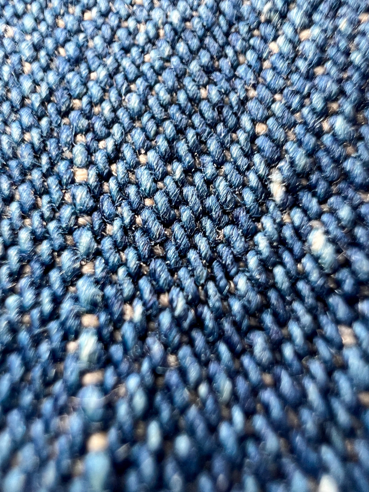
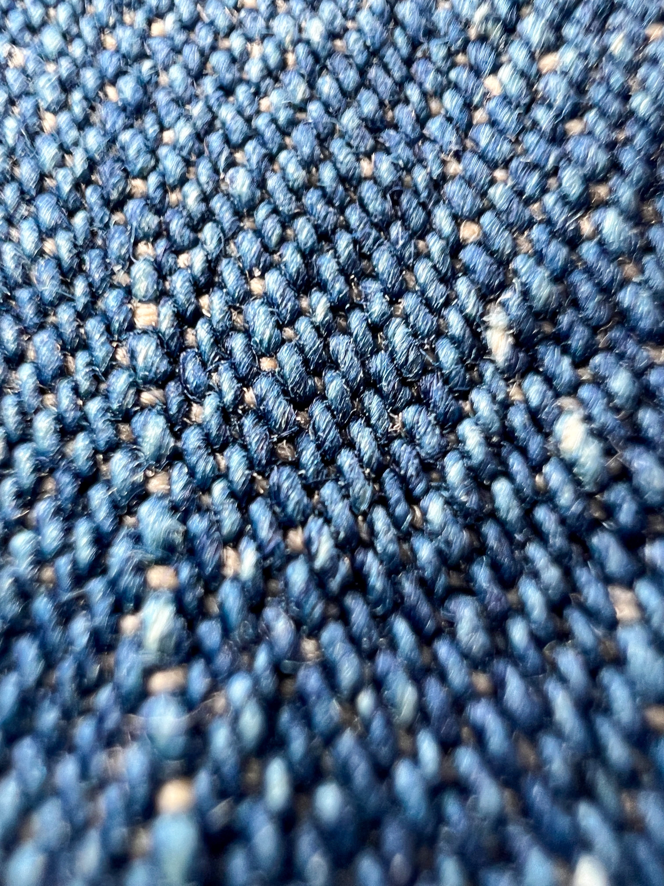

-U.S.NAVY Shawl Collar Denim Jacket-
このジャケットは1930年代のアメリカ海軍で使用されていたデニムジャケットになります。
大きな特徴としてはショールカラーと言われる襟です。
ショールカラーとは、ショール(肩掛け)をかけたときのような形の衿をいいます。またヘチマ・カラーなどと言われています。
このジャケットには前期型と後期型があり、こちらのジャケットは後期型になります。
前期型は月桂樹ボタンと言われる月桂樹の模様が入ったボタンが使われています。
程よく色落ちしていて、現代のデニムとはまた違った表情なのがとても面白いジャケットです。


 
